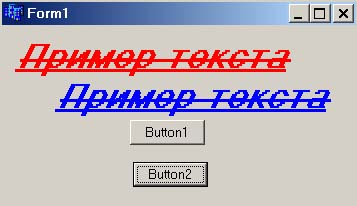

2 Работа с графикой с использованием классов, свойств и функций компонент Borland C++ Builder
Основные понятияВ среде C++Builder существует три рода объектов, которые имеют отношение к графике:
Отметим, что графические объекты Windows взаимосвязаны. Так - объект TPicture всегда содержит некоторую графику, которой в свою очередь, может потребоваться для отображения канва, а единственный стандартный графический класс канвы - это TBitmap. Как отмечалось выше, Borland С++ Builder инкапсулирует функции Windows GDI на разных уровнях. Наиболее завершенным является интерфейс, предоставляемый свойством Canvas (канва), объектного класса канвы, его графических компонент. Использование канвы снимает с программиста заботу при выводе изображений об инициализации контекста устройства и его освобождении. Наличия вложенных свойств (характеристик пера, кисти, шрифтов, растровых изображений) также не требует слежения за состояниями ресурсов - основная задача - это определение характеристик для этих графических объектов и грамотное их использование. Речь об этом в следующем параграфе. Объектный класс канвыИнкапсулированные и перегруженные функции GDI и WinApi объектного класса канвы многие авторы относят к трем различным уровням. В этой условной классификации функции высокого уровня обеспечивают возможность рисования линий, фигур и текста. Определение свойств и методов манипулирования графическими примитивами канвы отнесены к среднему уровню. Нижний уровень обеспечивается доступ к самим функциям Windows GDI. Классификация не бесспорна, но она позволяет ориентироваться в достаточно большом колличестве свойств и методов канвы и, поэтому, приведем эту классификацию.
Примеры использования функций канвы для рисования приметивовОсновы рисования примитивов рассмотрены выше при рассмотрении функций GDI, здесь, на примерах, не повторяя уже описанные ранее приемы вывода примитивов, показаны лишь некоторые особенности их отображения с использованием функций канвы. Прстейший пример относится к рисованию линий, кроме того показано как можно задавать параметры пера: void __fastcall
TForm1::Button1Click(TObject *Sender)
{
//Задаем цвет пера
Canvas->Pen->Color=(TColor)RGB(255,0,0);
//Задаем ширину пера
Canvas->Pen->Width=5;
//Можно переместить перо в исходную точку так
Canvas->MoveTo(100,200);
//Или тпереместить перо так
TPoint tPoint;
tPoint.x=100;
tPoint.y=200;
Canvas->PenPos=tPoint;
//И рисуем линию от исходной точки 100,200 до конкечной 0,50
Canvas->LineTo(0,50);
//Освобождать и восстанавливать ничего не надо
//однако канва запоминает установленные параметры
}
Пример рисования дуги и секторов: void __fastcall
TForm1::Button1Click(TObject *Sender)
{
//Стиль кисти
Canvas->Brush->Style=bsHorizontal;
//Цвет кисти
Canvas->Pen->Color = clBlue;
//Рисуем дугу
Canvas->Arc(0,0,500,500,250,0,50,0);
//Рисуем сектор изменяя стиль взаимодействия цвета пера и холста
Canvas->Pen->Mode=pmWhite;
Canvas->Chord(0,0,250,250,250,125,0,0);
//Освобождать и восстанавливать ничего не надо
//Но помним, что канва запомнила установленные параметры
}
Пример рисования ломаных линий (перо, при желании, можно задать как и ранее): void __fastcall
TForm1::Button1Click(TObject *Sender)
{
TPoint tPoints[6];
Canvas->Pen->Color = clRed;
Canvas->Pen->Width=3;
tPoints[0].x = 40;
tPoints[0].y = 10;
tPoints[1].x = 20;
tPoints[1].y = 60;
tPoints[2].x = 70;
tPoints[2].y = 30;
tPoints[3].x = 10;
tPoints[3].y = 30;
tPoints[4].x = 60;
tPoints[4].y = 60;
tPoints[5].x = 40;
tPoints[5].y = 10;
Canvas->Polyline(tPoints,5);
}
Пример рисования кривых Блейзера: void __fastcall
TForm1::Button1Click(TObject *Sender)
{
TPoint tPoints[7];
tPoints[0]=TPoint(0,0);
tPoints[1]=TPoint(800,30);
tPoints[2]=TPoint(0,40);
tPoints[3]=TPoint(550,400);
tPoints[4]=TPoint(350,200);
tPoints[5]=TPoint(550,400);
tPoints[6]=TPoint(0,500);
Canvas->PolyBezier(tPoints,6);
}
Пример отображения прямоугольников и эллипсов различными способами и использования кистей: void __fastcall
TForm1::Button1Click(TObject *Sender)
{
//Задаем цвет пера
Canvas->Pen->Color=(TColor)RGB(0,255,0);
//Задаем щирину пера
Canvas->Pen->Width=1;
//Стиль пера - пунктир
Canvas->Pen->Style=psDot;
//Стиль вывода замкнутой фигуры, зависяший от цвета пера
//и канвы ( заменяет своими возможностями) функцию SetBkMode()
//Эдесь прозрачный фон
Canvas->Pen->Mode=pmCopy;
//Рисуем прямоугольник по точкам
Canvas->Rectangle(0,0,100,100);
//Здесь, аналог GDI непрозрачного фона
Canvas->Pen->Mode=pmWhite;
//Рисуем элипс вписанный в прямоугольник
Canvas->Ellipse(250,250,350,550);
//Создаем перо функцией CreatePen() 1 - толщина пера
HPEN hPen=CreatePen(PS_DASHDOTDOT,1,RGB(255,0,0));
//Устанавливаем это перо как текущее
Canvas->Pen->Handle=hPen;
//Изменяем стиль вывода
Canvas->Pen->Mode=pmCopy;
//Стиль кисти - вертикальная штриховка
Canvas->Brush->Style=bsVertical;
//Можно переопределить прозрачность и так
SetBkMode(Canvas->Handle,OPAQUE);
//Рисуем прямоугольник с закругленными краями
Canvas->RoundRect(100,100,200,200,50,50);
//Координаты можно задать и так
TRect tRect; //Координаты точек
tRect.Left=100; //Левыя
tRect.Right=500; //Правая
tRect.Top=250; //Верхняя
tRect.Bottom=450; //Нижняя
//Используем кисть для закрашивания объекта
Canvas->Brush->Color=(TColor)RGB(0,0,255);
Canvas->Rectangle(tRect);
Canvas->Brush->Color=(TColor)RGB(0,255,255);
//Стиль кисти
Canvas->Brush->Style=bsCross;
//Или по координатам
Canvas->RoundRect(100,300,250,450,50,50);
}
Использование кисти для заливки фигур: void __fastcall
TForm1::Button1Click(TObject *Sender)
{
Canvas->Brush->Color=(TColor)RGB(0,255,255);
TRect tRect(0,0,100,100);
Canvas->FillRect(tRect);
//Рисуем прямоугольник по точкам
Canvas->Rectangle(0,0,100,100);
//Освобождать и восстанавливать ничего не надо
}
И интересный эффект заполнения канвы цветом кисти: void __fastcall
TForm1::Button1Click(TObject *Sender)
{
//Параметр fsBorder - заполнить всю область
//цветом кисти, до края канвы
Canvas->Brush->Color=(TColor)RGB(255,0,255);
//Исходная точка в центре канвы, в данном случае
//окна приложения
Canvas->FloodFill(Width/2,Height/2, NULL, fsBorder);
//Меняем цвет и повторяем
Canvas->Brush->Color=(TColor)RGB(255,0,0);
Canvas->FloodFill(Width/2,Height/2,NULL, fsBorder);
}
Рисование рамки вокруг прямоугольника: void __fastcall
TForm1::Button1Click(TObject *Sender)
{
Canvas->Brush->Color=(TColor)RGB(125,0,255);
TRect tRect; //Координаты точек
tRect.Left=100; //Левыя
tRect.Right=500; //Правая
tRect.Top=250; //Верхняя
tRect.Bottom=450; //Нижняя
Canvas->FrameRect(tRect);
}
Из примеров видно, что (с учетом некоторой модификации параметров функций) рисование графических примитивов аналогично интерфейсу GDI. Однако, так как не требуется следить за состоянием контекста и его графических объектов, написание кода значительно упрощается. Вывод текста на канвуВывод текста на канву предельно прост. Требуется только задать характеристики шрифта (свойство Font канвы), текст в формате AnsiString и использовать метод TextOutA() канвы. Следующий пример показывает как это делается и, также, демонстрирует то, что канва сохраняет заданные свойства - нажатие кнопки Button2, в обработчике нажатия которой изменен лишь цвет, не изменяет остальных свойств шрифта, заданных в обработчике нажатия кнопки Button1. void __fastcall
TForm1::Button1Click(TObject *Sender)
{
AnsiString vasS="Пример текста";
//Цвет текста
Canvas->Font->Color=clRed;
//Размер шрифта в точках
Canvas->Font->Size=20;
//Стиль шрифта
TFontStyles tFontStyle;
//Зачеркнутый, наклонный, жирный, подчепкнутый
tFontStyle << fsStrikeOut << fsItalic << fsBold << fsUnderline;
Canvas->Font->Style =tFontStyle;
//Имя шрифта
Canvas->Font->Name="Times";
//Вывод текста
Canvas->TextOutA(10,10,vasS);
}
void __fastcall TForm1::Button2Click(TObject *Sender)
{
AnsiString vasS="Пример текста";
Canvas->Font->Color=clBlue;
Canvas->TextOutA(50,50,vasS);
}
 Рис 1. Пример работы со шрифтами. Полезные функции для работы с текстом:
|